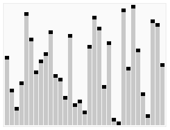
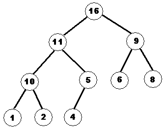

Сортировки. Квадратичные сортировки (сортировка выбором, «пузырьковая сортировка»). Сортировка подсчётом. Быстрая сортировка QuickSort.
Алгоритмы сортировки - это методы для упорядочения элементов массива в каком-либо порядке.
Алгоритмы сортировки оцениваются по скорости выполнения и количествую используемой памяти.
Время (скорость выполнения) - основной параметр, он измеряется относительно количества элементов исходного массива. Например: $O(n)$ - время выполнения растёт пропорционально количеству элементов, $O(n^2)$ - пропорционально квадрату количества элементов.
При описании всех алгоритмов: N или $n$ - количество элементов в массиве.
Квадратичные сортировки, сортировка "Пузырьком"
Это самая простая сортировка, её следует применять когда у вас немного элементов (до десятков тысяч). Её сложность $O(n^2)$, т.е. количество операций растёт как квадрат от количества элементов.
Шаги алгоритма:
- Считываем исходный массив в память.
- Пока происходят изменения в массиве: сравниваем каждые два соседних элемента, и если они не стоят не в том порядке, меняем их местами.
- Теперь массив отсортирован, выводим его.
sort_bubble.pas
Модификация с максимумами:
В этой сортировке мы пробегаем массив N раз, каждый раз перемещая в конец массива самый большой при сортировке по возрастанию (или самый маленький при сортировке по убыванию) элемент.
Шаги алгоритма:
- Считываем исходный массив в память.
- Переносим в N-ый элемент максимум среди элементов 1..N.
- Переносим в N-1-ый элемент максимум среди 1..N-1.
- и так далее (делаем это N раз).
- Теперь массив отсортирован, выводим его.
{$APPTYPE CONSOLE}
var
N : Integer; { Количество элементов в массиве }
A : array [1..5000] of Integer; { Сортируемый массив }
i,j : Integer; { Переменные цикла }
temp : Integer; { Переменная для обмена местами двух элементов в массиве }
begin
{ Ввод исходного массива из файла }
...
{ Сортировка }
for i:=N downto 1 do { A[i] должно быть больше чем все A[j] слева от него }
for j:=1 to i-1 do { Проверяем все A[j] }
if A[j] > A[i] then begin { Если какое-то A[j] больше чем A[i], то меняем их местами }
temp := A[i]; { Меняем элементы местами при помощи временной переменной temp }
A[i] := A[j];
A[j] := temp;
end;
{ Вывод отсортированного массива в файл }
...
end.
Другой вариант, легче для запоминания:
{ Сортировка }
for i := 1 to N-1 do
for j := i+1 to N do
if A[j] < A[i] then begin
temp:=A[i]; { Меняем элементы A[i] и A[j] местами }
A[i]:=A[j];
A[j]:=temp;
end;
Ну или можно вообще не запоминать как меняются индексы и писать i от 1 до N и j от 1 до N.
Менять местами элементы можно без использования временной переменной, сложениями/вычитаниями (и - исходное значение):
$A_j'=A_i+A_j$;
$A_i'=A_j'-A_i=A_i+A_j-A_i=A_j$;
$A_j''=A_j'-A_i'=A_i+A_j-A_j=A_i$
A[j] := A[i] + A[j]; { A[j] := A[i]_и + A[j]_и }
A[i] := A[j] - A[i]; { A[i] := A[i]_и + A[j]_и - A[i]_и = A[j]_и }
A[j] := A[j] - A[i]; { A[j] := A[i]_и + A[j]_и - A[j]_и = A[i]_и }
Или при помощи операции XOR (используя $x \oplus x =0$):
$A_i'=A_i \oplus A_j$;
$A_j'=A_i' \oplus A_j = A_i \oplus A_j \oplus A_j = A_i$;
$A_i''=A_i' \oplus A_j'= A_i \oplus A_j \oplus A_i = A_j$
A[i] := A[i] xor A[j]; A[j] := A[i] xor A[j]; A[i] := A[i] xor A[j];
Реализация на Python
# Пузырьковая сортировка: O(n^2) по времени в среднем и в худшем случае, O(1) дополнительной памяти
def bubble_sort(items):
"""Сортирует список по возрастанию на месте и возвращает его."""
changed = True
while changed: # пока в последнем проходе были перестановки, делаем ещё один проход
changed = False
for i in range(len(items) - 1):
# Соседние элементы меняем местами, если левый больше правого
if items[i] > items[i + 1]:
items[i], items[i + 1] = items[i + 1], items[i]
changed = True
return items
def main():
print(bubble_sort([5, 3, 8, 1, 9, 2, 7]))
if __name__ == "__main__":
main()
Реализация на Rust
// Пузырьковая сортировка: O(n^2) по времени в среднем и в худшем случае, O(1) дополнительной памяти
pub fn bubble_sort(items: &mut [i64]) {
let mut changed = true;
// Пока в последнем проходе были перестановки, делаем ещё один проход
while changed {
changed = false;
for i in 0..items.len().saturating_sub(1) {
// Соседние элементы меняем местами, если левый больше правого
if items[i] > items[i + 1] {
items.swap(i, i + 1);
changed = true;
}
}
}
}
fn main() {
let mut items: Vec<i64> = vec![5, 3, 8, 1, 9, 2, 7];
bubble_sort(&mut items);
println!("{:?}", items);
}
Реализация на C++
// Пузырьковая сортировка: O(n^2) по времени в среднем и в худшем случае, O(1) дополнительной памяти
#include <cstddef>
#include <iostream>
#include <utility>
#include <vector>
void bubble_sort(std::vector<int>& items) {
bool changed = true;
while (changed) { // пока в последнем проходе были перестановки, делаем ещё один проход
changed = false;
for (std::size_t i = 0; i + 1 < items.size(); ++i) {
// Соседние элементы меняем местами, если левый больше правого
if (items[i] > items[i + 1]) {
std::swap(items[i], items[i + 1]);
changed = true;
}
}
}
}
int main() {
std::vector<int> items = {5, 3, 8, 1, 9, 2, 7};
bubble_sort(items);
for (int item : items) {
std::cout << item << ' ';
}
std::cout << '\n';
return 0;
}
Сортировка выбором
На каждом шаге находим минимальный элемент в неотсортированной части массива и меняем его местами с первым элементом этой части. Для массива из $n$ элементов выполняется около $n^2/2$ сравнений, дополнительная память $O(1)$.
Реализация на Python
# Сортировка выбором: на каждом шаге ставим минимум неотсортированной части на её начало, O(n^2)
def selection_sort(a):
n = len(a)
for i in range(n - 1):
m = i # индекс минимума в неотсортированной части
for j in range(i + 1, n):
if a[j] < a[m]:
m = j
a[i], a[m] = a[m], a[i]
return a
if __name__ == "__main__":
print(*selection_sort([5, 2, 9, 1, 5, 6])) # 1 2 5 5 6 9
Реализация на C++
// Сортировка выбором: на каждом шаге ставим минимум неотсортированной части на её начало, O(n^2)
#include <iostream>
#include <utility>
#include <vector>
void selectionSort(std::vector<int>& a) {
int n = static_cast<int>(a.size());
for (int i = 0; i + 1 < n; i++) {
int m = i; // индекс минимума в неотсортированной части
for (int j = i + 1; j < n; j++)
if (a[j] < a[m]) m = j;
std::swap(a[i], a[m]);
}
}
int main() {
std::vector<int> a = {5, 2, 9, 1, 5, 6};
selectionSort(a);
for (int x : a) std::cout << x << ' '; // 1 2 5 5 6 9
std::cout << '\n';
return 0;
}
Реализация на Rust
// Сортировка выбором: на каждом шаге ставим минимум неотсортированной части на её начало, O(n^2)
fn selection_sort(a: &mut [i32]) {
let n = a.len();
for i in 0..n.saturating_sub(1) {
let mut m = i; // индекс минимума в неотсортированной части
for j in i + 1..n {
if a[j] < a[m] {
m = j;
}
}
a.swap(i, m);
}
}
fn main() {
let mut a = vec![5, 2, 9, 1, 5, 6];
selection_sort(&mut a);
println!("{:?}", a); // [1, 2, 5, 5, 6, 9]
}
Интерактивно: пузырьком и выбором
Введите числа от 0 до 99 через пробел и выберите алгоритм. Сравниваемые элементы подсвечены, а зелёным отмечена уже стоящая на своём месте часть массива.
Сортировка подсчётом
Когда диапазон чисел которые нужно отсортировать невелик по сравнению с их количеством, проще (и быстрее всего) посчитать количество элементов каждого вида прямо при чтении входного файла и вывести их "по видам".
sort_counting.pas
Реализация на Python
# Сортировка подсчётом: O(n + k) по времени и O(k) дополнительной памяти, где k - наибольшее значение (значения от 0)
def counting_sort(items):
"""Возвращает новый отсортированный список целых неотрицательных чисел."""
counts = [0] * (max(items, default=0) + 1) # counts[v] - сколько раз встречается число v
for item in items:
counts[item] += 1
result = []
for value, count in enumerate(counts):
result.extend([value] * count) # дописываем число value столько раз, сколько оно встречается
return result
def main():
print(counting_sort([3, 1, 4, 1, 5, 9, 2, 6, 5, 3, 5]))
if __name__ == "__main__":
main()
Реализация на Rust
// Сортировка подсчётом: O(n + k) по времени и O(k) дополнительной памяти, где k - наибольшее значение (значения от 0)
pub fn counting_sort(items: &[u32]) -> Vec<u32> {
let max_value = items.iter().copied().max().unwrap_or(0);
// counts[v] - сколько раз встречается число v
let mut counts = vec![0usize; max_value as usize + 1];
for &item in items {
counts[item as usize] += 1;
}
let mut result = Vec::with_capacity(items.len());
for (value, &count) in counts.iter().enumerate() {
// Дописываем число value столько раз, сколько оно встречается
result.extend(std::iter::repeat(value as u32).take(count));
}
result
}
fn main() {
println!("{:?}", counting_sort(&[3, 1, 4, 1, 5, 9, 2, 6, 5, 3, 5]));
}
Реализация на C++
// Сортировка подсчётом: O(n + k) по времени и O(k) дополнительной памяти, где k - наибольшее значение (значения от 0)
#include <algorithm>
#include <iostream>
#include <vector>
std::vector<int> counting_sort(const std::vector<int>& items) {
int max_value = items.empty() ? 0 : *std::max_element(items.begin(), items.end());
std::vector<int> counts(max_value + 1, 0); // counts[v] - сколько раз встречается число v
for (int item : items) {
++counts[item];
}
std::vector<int> result;
result.reserve(items.size());
for (int value = 0; value <= max_value; ++value) {
// Дописываем число value столько раз, сколько оно встречается
result.insert(result.end(), counts[value], value);
}
return result;
}
int main() {
const std::vector<int> items = {3, 1, 4, 1, 5, 9, 2, 6, 5, 3, 5};
for (int item : counting_sort(items)) {
std::cout << item << ' ';
}
std::cout << '\n';
return 0;
}
"Быстрая сортировка" QuickSort
Один из быстрых известных универсальных алгоритмов сортировки массивов (в среднем $O(n \log n)$ обменов при упорядочении $n$ элементов).
Описание алгоритма:
- выбрать элемент, называемый опорным.
- сравнить все остальные элементы с опорным, на основании сравнения разбить множество на три — «меньшие опорного», «равные» и «большие», расположить их в порядке меньшие-равные-большие.
- повторить рекурсивно для «меньших» и «больших».

sort_quick.pas
Реализация на C/C++
sort_quick.cpp
Самая короткая рекурсивная реализация QSort на Python
# -*- utf-8 -*-
# Различные реализации QSort (сортировки Хоара)
from random import *
def qsort(A):
""" Самая коротка рекурсивная реализация qsort на Python """
# Если длина массива 0 или 1, то сразу возвращаем его как есть
if len(A) <= 1:
return A
# Выбираем разделяющий элемент
y = choice(A)
# Делим массив на три куска и вызываем qsort для них
return qsort([x for x in A if x < y]) + [x for x in A if x == y] + qsort([x for x in A if x > y])
# Генерируем случайный массив
A = [randint(-10 ** 10, 10 ** 10) for i in range(100000)]
assert qsort(A) == sorted(A)
Реализация на Rust
// Быстрая сортировка QuickSort (схема Ломуто): O(n log n) в среднем, O(n^2) в худшем случае
pub fn quick_sort(items: &mut [i64]) {
if items.len() <= 1 {
return;
}
let last = items.len() - 1;
// Опорный элемент (из середины) переносим в конец отрезка
items.swap(items.len() / 2, last);
let pivot = items[last];
// Все элементы меньше опорного переставляем в начало отрезка
let mut store = 0;
for index in 0..last {
if items[index] < pivot {
items.swap(index, store);
store += 1;
}
}
// Ставим опорный элемент на его окончательное место
items.swap(store, last);
let (left, right) = items.split_at_mut(store);
quick_sort(left);
quick_sort(&mut right[1..]);
}
fn main() {
let mut data: Vec<i64> = vec![33, 5, 18, 2, 9, 41, 5, 0];
quick_sort(&mut data);
println!("{:?}", data);
}Сортировка слиянием - MergeSort
Алгоритм сортировки, который упорядочивает списки (или другие структуры данных, доступ к элементам которых можно получать только последовательно) в определённом порядке. Эта сортировка — хороший пример использования принципа «разделяй и властвуй». Сначала задача разбивается на несколько подзадач меньшего размера. Затем эти задачи решаются с помощью рекурсивного вызова или непосредственно, если их размер достаточно мал. Наконец, их решения комбинируются, и получается решение исходной задачи.
3 этапа алгоритма:
- Сортируемый массив разбивается на две части примерно одинакового размера;
- Каждая из получившихся частей сортируется отдельно, например — тем же самым алгоритмом;
- Два упорядоченных массива половинного размера соединяются в один.
#include <assert.h>
#include <stdlib.h>
#include <iostream>
using namespace std;
const int N = 100000; // Количество элементов в массиве
int A[N]; // Сортируемый массив
int T[N]; // Временный массив - буфер
// left - левая граница сортируемого участка
// right - правая граница
void MergeSort( int left, int right ){
// Если в массиве один элемент - сортировать нечего => сразу выходим
if(left >= right) return;
// Делим массив на 2 равные половинки
int m = (left + right) / 2; // Среднее арифметическое
MergeSort(left,m); // Сортируем левую половину
MergeSort(m+1,right); // Сортируем правую половину
// Объединяем результаты - операция Merge (слияние)
int l = left, r = m+1;
for(int i = left; i<= right; i++){
if(l > m) // Если левая половинка кончилась, то берём только из правой
T[i] = A[r++];
else if(r > right) // Если правая половинка кончилась, то берём только из правой
T[i] = A[l++];
else if(A[l] < A[r]) // Если обе не кончились, то берём минимальный элемент
T[i] = A[l++];
else
T[i] = A[r++];
}
// Копируем обратно из временно буфера в A
for(int i = left; i<=right; i++)
A[i] = T[i];
// Проверка, что всё верно отсортировано
for(int i = left; i<= right-1; i++)
assert( A[i] <= A[i+1] );
}
int main() {
// Заполняем случайным числами массив A
for(int i=0;i<N;i++) A[i] = rand() % 1000;
// Вызов сортировки всех элементов
MergeSort(0,N-1);
// Вывод отсортированного массива
for(int i=0;i<N;i++) cout << A[i] << " ";
cout << endl;
return 0;
}
Вариант с использованием шаблонов:
// Объявление merge заранее: mergeSort вызывает его раньше, чем merge описан ниже
template<class T> void merge(T a[], long lb, long split, long ub);
// a - сортируемый массив, его левая граница lb, правая граница ub
template<class T>
void mergeSort(T a[], long lb, long ub) {
long split; // индекс, по которому делим массив
if (lb < ub) { // если есть более 1 элемента
split = (lb + ub)/2; // Центр обрабатываемого куска массива
mergeSort(a, lb, split); // сортировать левую половину
mergeSort(a, split+1, ub);// сортировать правую половину
merge(a, lb, split, ub); // слить результаты в общий массив
}
}
template<class T>
void merge(T a[], long lb, long split, long ub) {
// Слияние упорядоченных частей массива в буфер temp
// с дальнейшим переносом содержимого temp в a[lb]...a[ub]
// текущая позиция чтения из первой последовательности a[lb]...a[split]
long pos1=lb;
// текущая позиция чтения из второй последовательности a[split+1]...a[ub]
long pos2=split+1;
// текущая позиция записи в temp
long pos3=0;
T *temp = new T[ub-lb+1];
// идет слияние, пока есть хоть один элемент в каждой последовательности
while (pos1 <= split && pos2 <= ub) {
if (a[pos1] < a[pos2])
temp[pos3++] = a[pos1++];
else
temp[pos3++] = a[pos2++];
}
// одна последовательность закончилась -
// копировать остаток другой в конец буфера
while (pos2 <= ub) // пока вторая последовательность непуста
temp[pos3++] = a[pos2++];
while (pos1 <= split) // пока первая последовательность непуста
temp[pos3++] = a[pos1++];
// скопировать буфер temp в a[lb]...a[ub]
for (pos3 = 0; pos3 < ub-lb+1; pos3++)
a[lb+pos3] = temp[pos3];
delete[] temp;
}
Реализация на Delphi
var
N : integer; { Количество элементов }
A, T: array [1 .. 1000000] of integer; { Сортируемый массив }
Inversions: int64 = 0; { Для подсчёта числа инверсий }
procedure MSort(l, r: integer);
var
e, i, j, k: integer;
begin
if l >= r then
exit;
k := (l + r) div 2; { Средний элемент }
MSort(l, k);
MSort(k + 1, r);
i := l; { Первая половина массива }
j := k + 1; { Вторая половина массива }
{ Слияние }
for e := l to r do begin { Куда записываем результат }
if i > k then begin
T[e] := A[j];
Inc(j);
Inc(Inversions,k-i+1); { Подсчёт инверсий }
end else if j > r then begin
T[e] := A[i];
Inc(i);
end else if A[i] <= A[j] then begin
T[e] := A[i];
Inc(i);
end else begin
T[e] := A[j];
Inc(j);
Inc(Inversions,k-i+1); { Подсчёт инверсий }
end;
end;
{ Обратное копирование из T }
for e := l to r do
A[e] := T[e];
end;
Реализация на Rust
// Сортировка слиянием MergeSort: O(n log n) по времени, O(n) дополнительной памяти
pub fn merge_sort(items: &[i64]) -> Vec<i64> {
if items.len() <= 1 {
return items.to_vec();
}
let middle = items.len() / 2;
let left = merge_sort(&items[..middle]); // сортируем левую половину
let right = merge_sort(&items[middle..]); // сортируем правую половину
merge(&left, &right)
}
// Сливает два отсортированных среза в один отсортированный вектор
fn merge(left: &[i64], right: &[i64]) -> Vec<i64> {
let mut result = Vec::with_capacity(left.len() + right.len());
let (mut i, mut j) = (0, 0);
while i < left.len() && j < right.len() {
// Берём меньший из двух первых оставшихся элементов
if left[i] <= right[j] {
result.push(left[i]);
i += 1;
} else {
result.push(right[j]);
j += 1;
}
}
// Одна из частей закончилась - дописываем хвост другой
result.extend_from_slice(&left[i..]);
result.extend_from_slice(&right[j..]);
result
}
fn main() {
let data: Vec<i64> = vec![33, 5, 18, 2, 9, 41, 5, 0];
println!("{:?}", merge_sort(&data));
}Heap - куча
Бинарное дерево - у каждого родителя максимум 2 потомка
Предок: $Parent = \frac{i}{2}$. Потомки: левый $l = 2i$, правый $r = 2i+1$.
Основное свойство кучи, любая функция, которая допускает линейное упорядочивание.

HeapSort - сортировка при помощи кучи
sort_heap.pas
#include <assert.h>
#include <stdlib.h>
#include <iostream>
using namespace std;
const int N = 80;
// Массив, который на время станет двоичной кучей, чтобы потом стать отсортированным массивом
int A[N];
// Текущий размер кучи, т.е. сколько первых элементов массива A сейчас являются двоичной кучей
int HeapSize;
// Поменять местами 2 элемента массива i-ый и j-ый
inline void swap(int i, int j){
int temp = A[i];
A[i] = A[j];
A[j] = temp;
}
// Выполняется ли основное свойство кучи?
bool heap_function(int parent, int child){
return A[parent] > A[child];
}
// Мы хотим сверху получить самый минимум
// parent - корневой элемент
// Мы обновили элемент parent и хотим чтобы куча снова была кучей
void heap(int parent){
// -= Левый потомок =-
int left = 2*parent + 1;
if(left < HeapSize) // Левый потомок есть
if(!heap_function(parent,left)){ // Проверка основного свойства кучи
// Меняем их местами
swap(left,parent);
heap(left); // Проталкиваем значение дальше
}
// -= Правый потомок =-
int right = 2*parent + 2;
if(right < HeapSize) // Правый потомок есть
if(!heap_function(parent,right)){ // Проверка основного
// Меняем их местами
swap(right,parent);
heap(right);
}
}
void HeapSort(){
HeapSize = N;
// Строим кучу
for(int i=N-1;i>=0;i--)
heap(i);
// Выводим очередной элемент
for(int i=0;i<N;i++){
// Ставим элемент с вершины кучи в конец массива
swap(0,HeapSize-1);
// Уменьшаем кучу
HeapSize--;
// Упорядочиваем вершину кучи
heap(0);
}
// Проверяем, что массив отсортирован
for(int i=0;i<N-1;i++)
assert( A[i] <= A[i+1] );
}
int main() {
// Заполняем случайным числами массив A
for(int i=0;i<N;i++) A[i] = rand() % 1000;
// Вызов сортировки
HeapSort();
// Вывод отсортированного массива
for(int i=0;i<N;i++) cout << A[i] << " ";
cout << endl;
return 0;
}
Реализация на Rust
// Пирамидальная сортировка HeapSort: O(n log n) по времени, O(1) дополнительной памяти
// Опускает элемент с индексом root вниз, пока куча из size элементов не восстановится
fn sift_down(items: &mut [i64], mut root: usize, size: usize) {
loop {
let mut largest = root;
let left = 2 * root + 1;
let right = 2 * root + 2;
if left < size && items[left] > items[largest] {
largest = left;
}
if right < size && items[right] > items[largest] {
largest = right;
}
if largest == root {
return;
}
items.swap(root, largest);
root = largest;
}
}
pub fn heap_sort(items: &mut [i64]) {
let size = items.len();
// Строим кучу: от последнего родителя к корню
for root in (0..size / 2).rev() {
sift_down(items, root, size);
}
// Максимум лежит в вершине кучи: переносим его в конец и уменьшаем кучу
for end in (1..size).rev() {
items.swap(0, end);
sift_down(items, 0, end);
}
}
fn main() {
let mut data: Vec<i64> = vec![33, 5, 18, 2, 9, 41, 5, 0];
heap_sort(&mut data);
println!("{:?}", data);
}Алгоритмы сортировки в стандартных библиотеках
Использование qsort в C/C++
В C/C++ в STL (Standard Template Library, которую, как правило, можно использовать на олимпиадах) доступна библиотека algorithm в которой в числе прочего есть реализованная процедура сортировки sort.
sort_std.cpp
В Python у списков (list) есть встроенный метод sort
sort_builtin.py